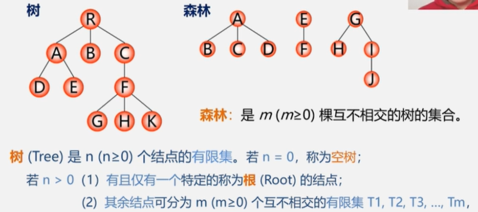

5/8 树和二叉树（下）
5.6 树和森林

5.6.1 树的存储结构


结合起来：


5.6.2 树和二叉树的转换
由子树和二叉树都可以用二叉链表作存储结构，则以二叉链表作媒介可以导出树与二叉树之间的一个对应关系。给定一棵树，可以找到唯一的一棵二叉树与之对应。


5.6.3 森林和二叉树的转换


5.6.4 树和森林的遍历


5.7 哈夫曼树（最优二叉树）Huffman Tree


5.7.1 哈夫曼树的基本概念


- 满二叉树不一定是哈夫曼树
- 权值越大的叶子距离根节点越近
- 具有相同带权结点的哈夫曼树不唯一
5.7.2 哈夫曼树的构造算法
因为哈夫曼树中权越大的叶子离根越近，所以采用贪心算法，即构造时首先选择权值小的叶子节点

- 包含n个叶子结点的哈夫曼树共有2n-1个结点，因为包含n棵树的森林要经过n-1次合并才能幸成哈夫曼树，也就产生了n-1个新结点。
- 哈夫曼树的结点度数为0或2，没有度为1的结点。

算法实现：


5.7.3 哈夫曼编码
若将编码设计为长度不等的二进制编码，即让待传字符串中出现次数较多的字符采用尽可能短的编码，则转换的二进制字符串便可能减少。
关键:要设计长度不等的编码，则必须使任一字符的编码都不是另一个字符的编码的前缀。这种编码称做前缀编码。


问题：
1.为什么哈夫曼编码能够保证是前缀编码?
因为没有一片树叶是另一片树叶的祖先，所以每个叶结点的编码就不可能是其它叶结点编码的前缀。
2.为什么哈夫曼编码能够保证字符编码总长最短?
因为哈夫曼树的带权路径长度最短，故字符编码的总长最短。
也就是说哈夫曼编码是前缀名，而且是最优前缀码。
哈夫曼编码的算法实现

本博客所有文章除特别声明外，均采用 CC BY-NC-SA 4.0 许可协议。转载请注明来自 ClancyCC！
评论